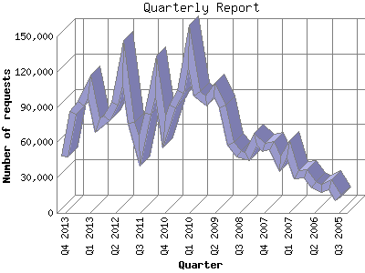

Analog 5.1
Analog 5.1 Report Magic 2.21
Report Magic 2.21The Quarterly Report shows total activity on your site for each quarter of a
year. Remember that each page hit can result in several server requests as the
images for each page are loaded.
Note: Most likely, the first and
last quarters will not represent a complete quarter's worth of data, resulting
in lower hits.

| Quarter | Number of requests | Number of page requests | |
|---|---|---|---|
| 1. | Q3 2005 | 12,467 | 2,157 |
| 2. | Q4 2005 | 23,778 | 5,747 |
| 3. | Q1 2006 | 20,966 | 7,711 |
| 4. | Q2 2006 | 24,095 | 8,118 |
| 5. | Q3 2006 | 33,327 | 9,489 |
| 6. | Q4 2006 | 32,731 | 9,737 |
| 7. | Q1 2007 | 54,344 | 13,554 |
| 8. | Q2 2007 | 41,558 | 11,543 |
| 9. | Q3 2007 | 57,545 | 13,884 |
| 10. | Q4 2007 | 55,724 | 12,358 |
| 11. | Q1 2008 | 62,356 | 13,011 |
| 12. | Q2 2008 | 47,899 | 11,659 |
| 13. | Q3 2008 | 49,882 | 12,170 |
| 14. | Q4 2008 | 59,089 | 11,368 |
| 15. | Q1 2009 | 90,600 | 13,258 |
| 16. | Q2 2009 | 104,675 | 13,331 |
| 17. | Q3 2009 | 95,052 | 15,047 |
| 18. | Q4 2009 | 101,266 | 17,570 |
| 19. | Q1 2010 | 141,705 | 22,789 |
| 20. | Q2 2010 | 102,462 | 15,972 |
| 21. | Q3 2010 | 90,478 | 14,559 |
| 22. | Q4 2010 | 68,737 | 15,701 |
| 23. | Q1 2011 | 115,790 | 19,638 |
| 24. | Q2 2011 | 84,357 | 16,700 |
| 25. | Q3 2011 | 52,874 | 11,864 |
| 26. | Q4 2011 | 76,198 | 16,461 |
| 27. | Q1 2012 | 127,727 | 20,196 |
| 28. | Q2 2012 | 92,608 | 16,568 |
| 29. | Q3 2012 | 80,356 | 13,891 |
| 30. | Q4 2012 | 74,095 | 17,276 |
| 31. | Q1 2013 | 107,251 | 25,321 |
| 32. | Q2 2013 | 92,923 | 27,472 |
| 33. | Q3 2013 | 85,232 | 26,841 |
| 34. | Q4 2013 | 48,218 | 15,081 |
Most active quarter Q2 2013 : 27,472 pages sent. 141,705 requests handled.
Quarterly average: 14,648 pages sent. 70,834 requests handled.
This report was generated on November 25, 2013 19:28.
Report time frame August 27, 2005 18:55 to November 25, 2013 23:55.
| Web statistics report produced by: | |
| Analog 5.1 | Report Magic 2.21 |